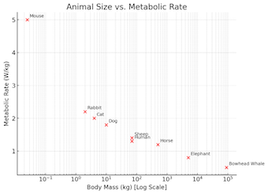
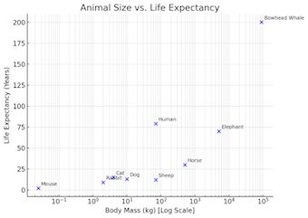

4. Importance of Physics Scaling Laws in Nanotechnology#
4.1 Why Size Matters#
At nanoscale, surface effects dominate over bulk properties.
Example: Small nanoparticles have lower melting points than bulk materials.
4.2 Scaling of Forces#
Gravity becomes negligible because force of gracity scales with \(m \propto L^3\).
Electromagnetic and surface tension forces tend to dominate.
Example: Van der Waals forces cause water droplets to stick to surfaces.
4.3 Quantum Effects#
Classical mechanics fails at the nanoscale.
Quantum mechanics determines behaviour.
Example: Quantum dots have discrete electron energy levels (we will cover these later).
4.4 Applications in Technology#
Scaling laws help in designing nanoscale devices.
Examples:
Miniaturisation in microelectronics (e.g., transistors).
Nanomedicine (e.g., drug delivery, sensors).
4.5 Scaling in Physics#
There is a general method for solving scaling problems. These basic steps can be applied generally and course if your maths is a strong you may see that you can take some short cuts!
Identify or Derive the Governing Equation
Determine the fundamental equation that describes the system.
Identify Length-Scale Terms
Locate terms in the equation that involve a length scale.
If necessary, use material property equations (e.g., density, conductivity, capacitance) to introduce length-dependent terms.
Rearrange the Equation
Express the equation in a form where the target property (e.g., speed, force, time) is the subject.
Convert to a Proportionality Expression
Replace the equals sign with “proportional to” (∝).
Ensure the equation contains only the target term and length scale terms (L’s).
Set all other dimensionless constants to unity.
Determine the Scaling Exponent
Rewrite the expression in the form \(L^n\).
Identify the value of \(n\) (e.g., 1, 2, -1/2) based on the proportionality relation.
Write Down Known Values for the Given Scale
Example: If the system is a boat, assign values such as \(L_1 = 2\) (length) and \(v_1 = 10\) (speed).
Write Down Known Values for the Target Scale
Example: If scaling the boat, assign \(L_2 = \text{new length}\).
Set Up the Scaling Equation
Solve for the Unknown Term
Rearrange the equation to express the unknown in terms of the known values:
Substitute Values and Compute the Answer
Insert numerical values and calculate the final result.
4.6 Electric Field#
Electric field strength is inversely proportional to characteristic size \( L \).
4.7 Capacitance#
Capacitance increases with characteristic size \( L \).
4.8 Inductance#
Inductance is proportional to characteristic size \( L \).
4.9 Heat Transfer Scaling#
4.9.1 Heat transfer through conduction#
This one is where there is a size range that breaks the simple scaling law. Lets start witht he simple macroscopic case:
We have \(A\) which is an area and \(x\) a distance so we can show that \(Q \propto L\)
However as the size reduced to microscopic scale \(k_c\) which is a macroscopic material thermal conductivity constant starts to itself scale with size. There we have, for L< 1µm,
import numpy as np
import matplotlib.pyplot as plt
def Q_scaling(L, Lc=1e-6, a=1):
"""
Returns Q ~ a*L^2 when L < Lc (ballistic),
a*L when L >= Lc (diffusive-like)
"""
return np.where(L < Lc, a * L**2, a * L)
L = np.logspace(-9, 1, 200) # 1 nm to 1 cm
Q_vals = Q(L)
plt.loglog(L, Q_vals)
plt.xlabel("L / m")
plt.ylabel("Q / $Q_0$")
plt.title("Size-dependent thermal transport")
plt.grid(True, which='both')
plt.show()
---------------------------------------------------------------------------
NameError Traceback (most recent call last)
Cell In[1], line 12
9 return np.where(L < Lc, a * L**2, a * L)
11 L = np.logspace(-9, 1, 200) # 1 nm to 1 cm
---> 12 Q_vals = Q(L)
14 plt.loglog(L, Q_vals)
15 plt.xlabel("L / m")
NameError: name 'Q' is not defined
Here we have smmothed the transition from small to large because of the arbitary threshold would lead to a jump.
4.9.1 Newton’s Cooling Law#
Energy needed to heat a material scales with mass \( L^3 \) because \(Q=mc \Delta T\) and there is a mass term.
Heat flux follows Newton’s Cooling Law. $\( Q=hA \Delta T \propto L^2 \)$
4.10 Scaling in Optics#
Limits feature size in conventional lithography.
\( d=\frac {1.22 \lambda} {2NA} \)
Where \(NA\) is the numerical appature of the lens and \(d\) is the feature size detectable.
We can there say that \(d \propto \lambda\), so here we are not using scaling by chacterisitic size as in the other examples. Optics for this reason tends not to fit into scaling so well as it is dominated by the wavelength of the light. There are likely examples such as diffraction that fit the pattern better.
4.11 Biological Scaling Laws#
Biological systems follow specific scaling laws that impact metabolism, strength, and lifespan as size changes.
4.11.1 Metabolic Scaling (Kleiber’s Law)#
Metabolic rate (energy consumption per unit time) scales with body mass \(M\) as:
\( \text{Metabolic Rate} \propto M^{3/4} \) \( \propto L^{9/4} \)
This means larger animals consume energy more efficiently per unit mass.
Example: Elephants have a lower metabolic rate per gram of tissue than mice.
Smaller animals require higher food intake per gram of body weight.

Figure 4.1 Plot of Metabolic Rate versus mass for a few example animals.
4.11.2 Strength and Bone Scaling#
Strength depends on cross-sectional area **(muscle/bone strength \( S \propto L^2 \) **, while weight scales with volume \( W \propto L^3 \).
Larger animals are proportionally weaker:
Example: An ant can carry many times its body weight, but an elephant cannot.
Bone thickness must increase disproportionately for large animals to support their weight.
4.11.3 Heart Rate and Lifespan#
Heart rate scales as:
\( \text{Heart Rate} \propto L^{-1/4} \)
Larger animals have slower heart rates and longer lifespans.
Example, Mice (500 bpm, 2-year lifespan) vs. Elephants (30 bpm, 60+ years).
Across species, most mammals have about a billion heartbeats per lifetime.
4.11.4 Effects of Scaling on Strength#
Smaller animals: High strength-to-weight ratio (e.g., ants can carry many times their weight).
Larger animals: Need thicker muscles (e.g., elephants).
Scaling humans up:
If doubled in height:
Strength increases by 4 times (remember proportional to surface area).
Body mass increases by 8 times (why - proportional to mass).
The person would struggle to stand.
4.11.5 **Scaling Summary:#
Biological Factor |
Scaling Law |
Implication |
|---|---|---|
Metabolic Rate |
\( M^{3/4} \) |
Larger animals are more energy-efficient. |
Strength |
\( L^2 \) |
Larger animals are proportionally weaker. |
Heart Rate |
\( L^{-1/4} \) |
Larger animals have slower heart rates & longer lifespans. |
Heat Loss |
\( L^2 \) vs. \( L^3 \) |
Smaller animals lose heat faster due to surface area to mass |
This explains why biological structures adapt in specific ways to size changes, influencing evolution, survival, and behavior!

Figure 4.2 Plot of expected lifespan versus mass for a few example animals. Note there are exceptions to the the rule.
4.12 Moore’s Law#
Number of transistors doubles every 2 years.
Transistor size must shrink to avoid doubling the chip’s surface area.
Every two years:
Area halves \( L^2 \).
Characteristic length \( L \) decreases by \(\sqrt{2}\)
Figure 4.3 Moores law - transister count by date of introduction
Key Points#
Scaling laws can help explain why nanoscale materials behave differently.
Moore’s Law predicts the continued miniaturisation of electronics.